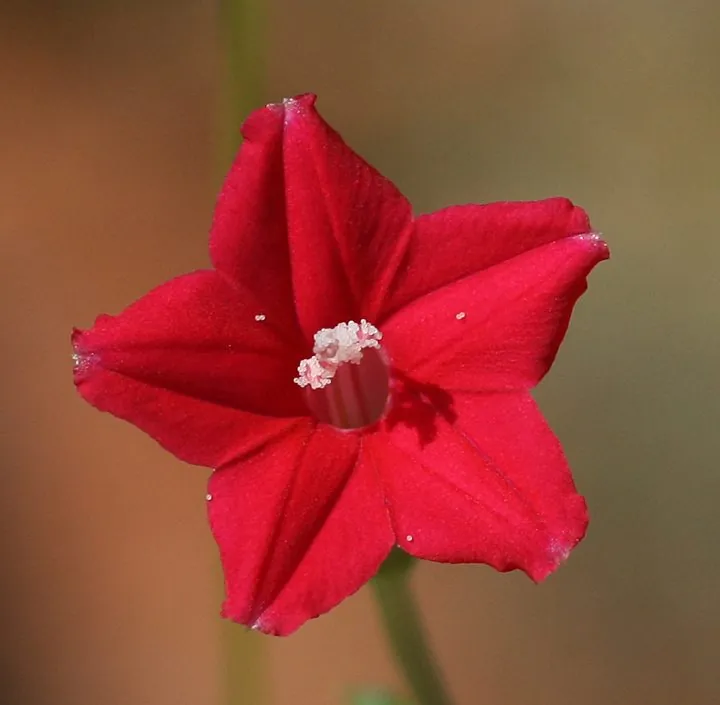

花卉与草本 · 植物界
茑萝 Ipomoea quamoclit

旋花科番薯属一年生缠绕草本，叶片羽状细裂如丝，花鲜红色、形似五角星，是夏秋篱笆上轻盈灵动的藤本花卉。
- 分类
- 门被子植物门纲木兰纲目茄目科旋花科属番薯属
- 栖息环境
- 篱笆、窗棂与庭院，喜光喜温、耐旱耐瘠薄
- 地理分布
- 原产墨西哥与南美北部；中国各地普遍栽培
- 保护级别
- 暂无评估；栽培观赏植物，不涉及保护等级
物种志
茑萝为旋花科番薯属一年生缠绕草本，茎细长柔弱，光滑无毛。叶片互生，羽状深裂至中脉，裂片线形如丝，翠绿轻盈。花单生于叶腋，花冠高脚碟状，鲜红色，花冠筒细长，先端五裂呈五角星形，花期七月至十月；蒴果卵形，成熟时开裂，种子黑色，果期九月至十一月。
茑萝原产墨西哥、南美洲北部，中国各地普遍栽培。它喜光、喜温暖，耐旱、耐瘠薄，对土壤要求不严，自播能力强。叶片细裂如羽、花形似五角星，攀援在篱笆、窗棂上轻盈秀丽，是夏秋庭院和阳台绿化的常用藤本花卉；也可作地被或盆栽造型。全草在民间入药，有清热解毒之效。茑萝生长迅速，一株可攀满数米长的篱笆。
形态与习性
- 株高缠绕藤本，茎长 2–4 m
- 花期7–10 月，花鲜红色
- 果期9–11 月，蒴果卵形
- 光照喜光，全日照开花繁
- 水分耐旱，忌积水
- 土壤疏松壤土，耐瘠薄
- 主要用途篱笆窗棂绿化、盆栽造型
趣味知识
- 茑萝的花冠五裂，平展后呈标准的五角星形，因此又名五角星花。
- 它的叶片羽状细裂如丝，远看像一团翠绿的羽毛。
- 茑萝与牵牛花同属，但叶片细裂、花形星状，风格更为轻盈。